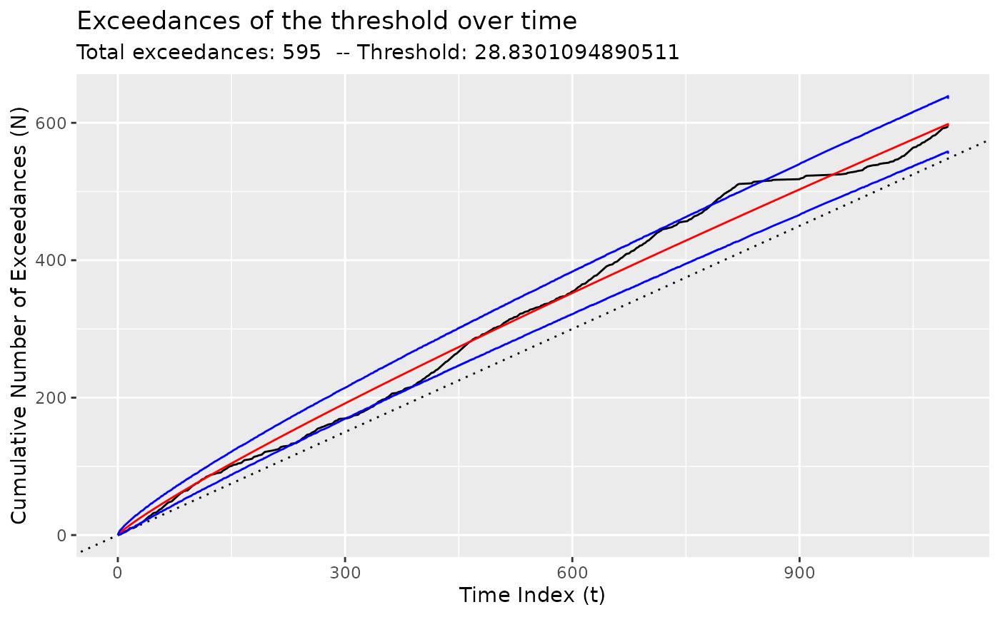

Using Coen's algorithm
coen.RmdPlease see Baumer and Suarez Sierra (2024) for more details.
plot(bogota_pm)
Using the original implementation of Coen’s algorithm
x <- segment(bogota_pm, method = "coen", num_generations = 5)
#> Warning: `segment_coen()` was deprecated in tidychangepoint 0.0.1.
#> ℹ Please use `segment_ga_coen()` instead.
#> ℹ The deprecated feature was likely used in the tidychangepoint package.
#> Please report the issue to the authors.
#> This warning is displayed once per session.
#> Call `lifecycle::last_lifecycle_warnings()` to see where this warning was
#> generated.
#> | | | 0% | |=============== | 25% | |============================== | 50% | |============================================= | 75% | |============================================================| 100%
changepoints(x)
#> [1] 306 491 612 708 739 773 1033
plot(x)
#> Registered S3 method overwritten by 'tsibble':
#> method from
#> as_tibble.grouped_df dplyr
Using the GA implementation of Coen’s algorithm
y <- segment(bogota_pm, method = "ga-coen", maxiter = 50, run = 10)
#> Seeding initial population with probability: 0.0145985401459854
changepoints(y)
#> x842 x1039
#> 842 1039
plot(y)
diagnose(y$model)
#> Warning: Removed 1 row containing missing values or values outside the scale range
#> (`geom_vline()`).
tidy(y)
#> # A tibble: 3 × 12
#> region num_obs min max mean sd begin end param_alpha param_beta
#> <chr> <int> <dbl> <dbl> <dbl> <dbl> <dbl> <dbl> <dbl> <dbl>
#> 1 [1,842) 841 1.3 78.5 30.4 14.4 1 842 0.955 1.21
#> 2 [842,1.04e… 197 1.3 57.4 20.9 10.4 842 1039 0.624 0.105
#> 3 [1.04e+03,… 58 2 58.2 32.8 12.7 1039 1097 0.729 0.0735
#> # ℹ 2 more variables: logPost <dbl>, logLik <dbl>
glance(y)
#> # A tibble: 1 × 8
#> pkg version algorithm seg_params model_name criteria fitness elapsed_time
#> <chr> <pckg_vrs> <chr> <list> <chr> <chr> <dbl> <drtn>
#> 1 GA 3.2.5 Genetic <list [1]> nhpp BMDL 1934. 35.39 secsChanging the threshold
By default, the threshold is set to the mean of the observed values,
but it can be changed using the model_fn_args argument to
segment().
Please note that the number of iterations (maxiter) of
the genetic algorithm has been set very low here for ease of
compilation. NOTA BENE: To obtain more robust result,
set maxiter to be something much higher. You can also
experiment with the popSize argument to
segment().
z <- segment(
bogota_pm,
method = "ga-coen",
maxiter = 5,
model_fn_args = list(threshold = 50)
)
#> Seeding initial population with probability: 0.0145985401459854
changepoints(z)
#> x295 x334 x488 x554 x646 x754 x844 x973 x1093
#> 295 334 488 554 646 754 844 973 1093
plot(z)
diagnose(z$model)
#> Warning: Removed 1 row containing missing values or values outside the scale range
#> (`geom_vline()`).
tidy(z)
#> # A tibble: 10 × 12
#> region num_obs min max mean sd begin end param_alpha param_beta
#> <chr> <int> <dbl> <dbl> <dbl> <dbl> <dbl> <dbl> <dbl> <dbl>
#> 1 [1,295) 294 1.3 57.2 28.1 12.1 1 295 0.181 0.108
#> 2 [295,334) 39 1.8 48.2 25.9 11.9 295 334 0.251 0.0872
#> 3 [334,488) 154 2.2 78.5 36.8 17.0 334 488 0.617 0.115
#> 4 [488,554) 66 1.6 47.1 26.7 12.4 488 554 0.240 0.0864
#> 5 [554,646) 92 1.7 63.2 29.7 13.4 554 646 0.434 0.0839
#> 6 [646,754) 108 1.7 55.2 31.2 13.9 646 754 0.498 0.0799
#> 7 [754,844) 90 1.8 71.8 31.3 16.6 754 844 0.544 0.0810
#> 8 [844,973) 129 1.3 57.4 19.4 9.68 844 973 0.342 0.0846
#> 9 [973,1.09… 120 1.5 58.2 27.8 12.4 973 1093 0.461 0.0848
#> 10 [1.09e+03… 4 3.2 51.2 35.7 21.9 1093 1097 0.639 0.0775
#> # ℹ 2 more variables: logPost <dbl>, logLik <dbl>
glance(z)
#> # A tibble: 1 × 8
#> pkg version algorithm seg_params model_name criteria fitness elapsed_time
#> <chr> <pckg_vrs> <chr> <list> <chr> <chr> <dbl> <drtn>
#> 1 GA 3.2.5 Genetic <list [1]> nhpp BMDL 654. 4.81 secs
Baumer, Benjamin S., and Biviana Marcela Suarez Sierra. 2024.
“Tidychangepoint: A Unified Framework for Analyzing Changepoint
Detection in Univariate Time Series.” https://beanumber.github.io/changepoint-paper/.